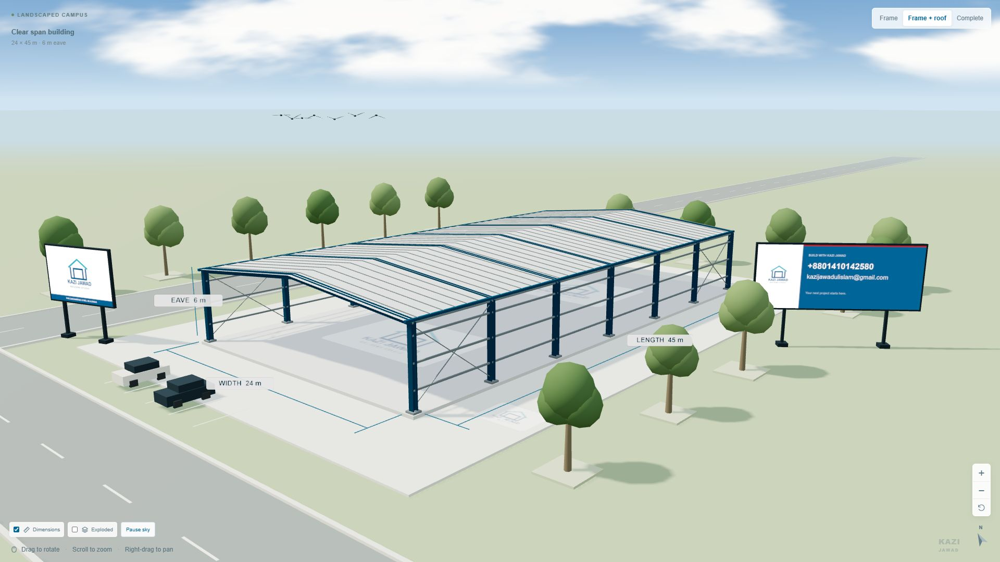
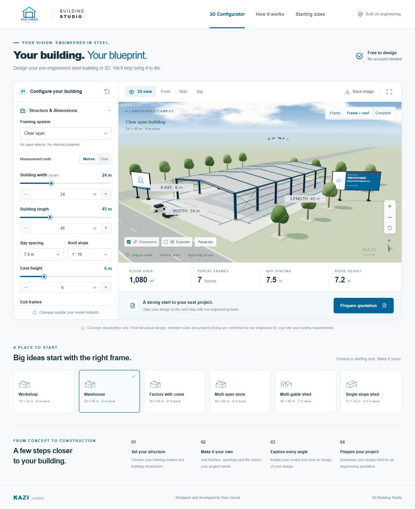
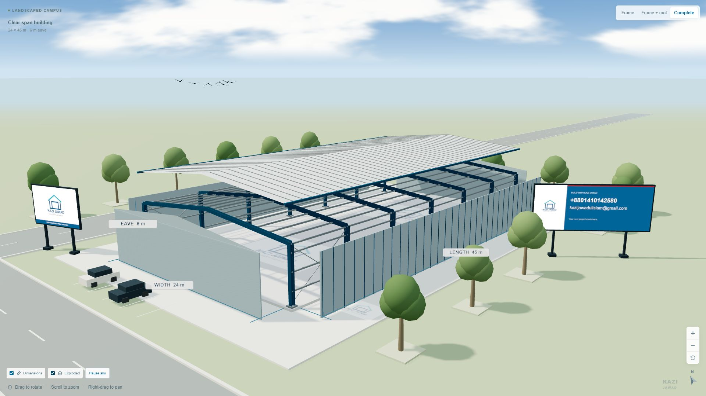

Articles & Projects / 06
3D Building Blueprint — Kazi Jawad
Configure a steel-building concept and explore it from every angle.

3D Building Blueprint makes an early building idea easy to explore. I created a browser-based studio where changing a framing system, dimensions, or accessories updates a three-dimensional concept inside a landscaped campus.
1. Configure the concept
Choose clear-span, multi-span, multi-gable, or single-slope framing. Adjust width, length, height, bay spacing, and roof slope, or start from one of six presets. Derived floor area, frame count, actual bay spacing, and ridge height stay visible beside the model.

2. Look inside the structure
Orbit and preset cameras make the model easy to inspect. Add a lean-to, canopy, crane, or mezzanine, then separate roof and cladding in the exploded view to understand the relationship between parts. Three.js generates the scene in the browser.

3. Share an early design idea
The project supports a 2560-pixel-wide PNG export and a downloadable text brief. It is a concept visualization, not a structural calculation or construction drawing. Quotation details are downloaded locally; submitting a request to an external service is not connected.